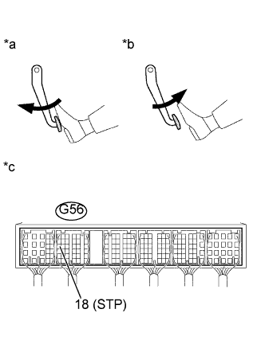

DTC P0724 Высокий уровень сигнала в цепи выключателя тормоза "B" |
| № DTC | Условие обнаружения DTC | Неисправный участок |
| P0724 | Выключатель стоп-сигналов остается включенным, даже если автомобиль 5 раз двигался в режиме GO (скорость не менее 30 км/час (18,63 или в час)) – STOP (скорость менее 3 км/час (1,86 мили в час)) (логика диагностирования за 2 поездки). |
|
| 1.СНИМИТЕ ПОКАЗАНИЯ ПОРТАТИВНОГО ДИАГНОСТИЧЕСКОГО ПРИБОРА (ВЫКЛЮЧАТЕЛЬ СТОП-СИГНАЛОВ) |
Подсоедините портативный диагностический прибор к DLC3.
Включите зажигание (IG).
Включите портативный диагностический прибор.
Войдите в следующие меню: Powertrain / Engine and ECT / Data List / Stop Light Switch.
Считайте значение, отображаемое на диагностическом приборе при нажатой и отпущенной педали тормоза.
| Педаль тормоза | Дисплей |
| Отпущена | OFF (ВЫКЛ) |
| Нажата | ON (ВКЛ) |
|
| ||||
| OK | ||
| ||
| 2.ПРОВЕРЬТЕ ВЫКЛЮЧАТЕЛЬ СТОП-СИГНАЛОВ В СБОРЕ |
Проверьте выключатель стоп-сигналов в сборе (Нажмите здесь).
|
| ||||
| OK | |
| 3.ПРОВЕРЬТЕ ЖГУТ ПРОВОДОВ И РАЗЪЕМ (ECM - ВЫКЛЮЧАТЕЛЬ СТОП-СИГНАЛОВ В СБОРЕ) |
|  |
Измерьте напряжение в соответствии со значениями, приведенными в таблице.
| Контакты для подключения диагностического прибора | Условие | Заданные условия |
| G56-18 (STP) - масса | Педаль тормоза нажата | 11-14 В |
| Педаль тормоза отпущена | 0 - 3 В |
| *a | Педаль тормоза нажата |
| *b | Педаль тормоза отпущена |
| *c | Устройство с подсоединенным жгутом проводов (ECM) |
|
| ||||
| OK | ||
| ||